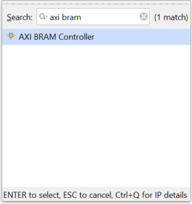

| |
Programming an Embedded MicroBlaze Processor¶
Introduction¶
In this tutorial, you create a simple MicroBlaze™ system for a Spartan®-7 FPGA using Vivado® IP integrator.
The MicroBlaze system includes native Xilinx® IP including:
MicroBlaze processor
AXI block RAM
Double Data Rate 3 (DDR3) memory
UARTLite
AXI GPIO
MicroBlaze Debug Module (MDM)
Proc Sys Reset
Local memory bus (LMB)
Parts of the block design are constructed using the Platform Board Flow feature.
This lab also shows the cross-trigger capability of the MicroBlaze processor.
The feature is demonstrated using a software application code developed in the Vitis software platform in a stand-alone application mode.
This lab targets the Xilinx SP701 FPGA Evaluation Kit.
Step 1: Start the Vivado IDE and Create a Project¶
Start the Vivado IDE by clicking the Vivado desktop icon or by typing
vivadoat a command prompt.From the Quick Start page, select Create Project.
In the New Project dialog box, use the following settings:
a. In the Project Name dialog box, type the project name and location.
b. Make sure that the Create project subdirectory check box is selected. Click Next.
c. In the Project Type dialog box, select RTL project. Ensure that the Do not specify sources at this time check box is cleared. Click Next.
d. In the Add Sources dialog box, set the Target language to either VHDL or Verilog. You can leave the Simulator language selection to Mixed.
e. Click Next.
f. In Add Constraints dialog box, click Next.
g. In the Default Part dialog box, select Boards and choose Spartan-7 SP701 Evaluation Platform. Click Next.
h. Review the project summary in the New Project Summary dialog box and click Finish to create the project.
Because you selected the SP701 board when you created the Vivado IDE project, you see the following message in the Tcl Console:
set_property board_part xilinx.com:sp701:part0:1.1 [current_project]
Although Tcl commands are available for many of the actions performed in the Vivado IDE, they are not explained in this tutorial. Instead, a Tcl script is provided that can be used to recreate this entire project. See the Tcl Console for more information. You can also refer to the Vivado Design Suite Tcl Command Reference Guide(UG835) for information about the write_bd_tcl commands.
Step 2: Create an IP Integrator Design¶
From Flow Navigator, under IP integrator, select Create Block Design.
Specify the IP subsystem design name. For this step, you can use
mb_subsystemas the Design name. Leave the Directory field set to its default value of <Local to Project>. Leave the Specify source set drop-down list set to its default value of Design Sources.Click OK in the Create Block Design dialog box, shown in the following figure.
In the IP integrator diagram area, right-click and select Add IP.
The IP integrator Catalog opens. Alternatively, you can also select the Add IP icon in the middle of the canvas.

Type
migin the Search field to find the MIG core, then select Memory Interface Generator (MIG 7 Series), and press Enter.
The Designer Assistance link becomes active in the block design banner.
Click Run Block Automation.

The Run Block Automation dialog box opens.
Click OK. This instantiates the MIG core and connects the I/O interfaces to the I/O interfaces for the DDR memory on the SP701 board.

Right-click anywhere in the block design canvas, and select Add IP. The IP catalog opens.
In the Search field, type
micrto find the MicroBlaze IP, then select MicroBlaze, and press Enter.
Note: If not displayed by default, the IP Details window can be displayed by clicking CTRL+Q on the keyboard while searching for IP.
Use the Board Window to Connect to Board Interfaces¶
There are several ways to use an existing interface in IP integrator. Use the Board window to instantiate some of the interfaces that are present on the SP701 board.
Select the Board window to see the interfaces present on the SP701 board.

In the Board window, notice that the DDR3 SDRAM interface is connected as shown by the circle
 in the following figure. This is because you used the Block Automation feature in the previous steps to connect the MIG core to the board interfaces for DDR3 SDRAM memory.
in the following figure. This is because you used the Block Automation feature in the previous steps to connect the MIG core to the board interfaces for DDR3 SDRAM memory.From the Board window, select UART under the Miscellaneous folder, and drag and drop it into the block design canvas.
This instantiates the AXI Uartlite IP on the block design.
Likewise, from the Board window, select LED under the General Purpose Input or Output folder, and drag and drop it into the block design canvas.
This instantiates the GPIO IP on the block design and connects it to the on-board LEDs.
Next, from the Board window, select FPGA Reset under the Reset folder, and drag and drop it into the block design canvas.
This connects the CPU push button reset to the MIG core IP.
The block design now should look like the following figure.

Add Peripheral: AXI block RAM Controller¶
Add the AXI block RAM Controller, shown in the following figure, by right-clicking the IP integrator canvas and selecting Add IP.

The block design now should look like the following figure.

Run Block Automation¶
Click Run Block Automation, as shown below.

The Run Block Automation dialog box opens.
On the Run Block Automation dialog box:
a. Leave Preset as the default value, None.
b. Set Local Memory to 64 KB.
c. Leave the Local Memory ECC as the default value, None.
d. Set Cache Configuration to 32 KB.
e. Set Debug Module to Extended Debug.
f. Leave the Peripheral AXI Port option as the default value, Enabled.
g. Leave the Interrupt Controller option unchecked.
h. Leave The Clock source option set to /mig_7series_0/ui_addn_clk_0 (100 MHz).
Click OK.
This generates a basic MicroBlaze system in the IP integrator diagram area, as shown in the following figure.
Use Connection Automation¶
Run Connection Automation provides several options that you can select to make connections. This section will walk you through the first connection, and then you will use the same procedure to make the rest of the required connections for this tutorial.
Click Run Connection Automation as shown in the following figure.
The Run Connection Automation dialog box opens.
Check the All Automation check box in the left pane of the dialog box as shown in the following figure. This selects interfaces to run Connection Automation for.
Use the following table to set options in the Run Connection Automation dialog box.
Table 1: Run Connection Automation Options
| Connection | More Information | Setting |
|---|---|---|
| axi_bram_ctrl_0 BRAM_PORTA | The only option for this automation is to instantiate a new Block Memory Generator as shown under options. | Leave the Blk_Mem_Gen to its default option of Auto. |
| axi_bram_ctrl_0 BRAM_PORTB | The Run Connection Automation dialog box opens and gives you two choices: Instantiate a new BMG and connect the PORTB of the AXI block RAM Controller to the new BMG IP Use the previously instantiated BMG core and automatically configure it to be a true dual- ported memory and connected to PORTB of the AXI block RAM Controller. | Leave the Blk_Mem_Gen option to its default value of Auto. |
| axi_bram_ctrl_0 S_AXI | Two options are presented in this case. The Master field can be set for either cached or non-cached accesses. | The Run Connection Automation dialog box offers to connect this to the /microblaze_0 (Cached). Leave it to its default value. In case, cached accesses are not desired this could be changed to /microblaze_0 (Periph). Leave the Clock Connection (for unconnected clks) field set to its default value of Auto. |
| axi_gpio_0 S_AXI | The Master field is set to its default value of /microblaze_0 (Periph). The Clock Connection (for unconnected clks) field is set to its default value of Auto. | Keep these default settings. |
| axi_uartlite_0 S_AXI | The Master field is set to its default value of /microblaze_0 (Periph). The Clock Connection (for unconnected clks) field is set to its default value of Auto. | Keep these default settings. |
| mdm_1 TRIG_IN_0 | This will be connected to a new System ILA core’s TRIG_OUT pin. | Leave the ILA Connection settings to its default value of Auto. |
| mdm_1 TRIG_OUT_0 | This will be connected to the System ILA core’sTRIG_IN pin. | Leave the ILA Connections settings to its default value of Auto. |
| mig_7series_0 S_AXI | The Master field is set to microblaze_0 (Cached). Leave it to this value so the accesses to the DDR3 memory are cached accesses. The Clock Connection (for unconnected clks) field is set to its default value of Auto. | Keep these default settings. |
| Rst_mig_7_series_0_100M ext_reset_in | The reset pin of the Processor Sys Rreset IP will be connected to the board reset pin. | Keep the default setting. |
After setting the appropriate options, as shown in the table above, click OK.
At this point, your IP integrator diagram area should look like the following figure.
Note: The relative placement of your IP might be slightly different.
Mark Nets for Debugging¶
To monitor the AXI transactions taking place between the MicroBlaze and the GPIO, select the interface net connecting M00_AXI interface pin of the microblaze_0_axi_periph instance and the S_AXI interface pin of the axi_gpio_0 instance.
Right-click and select Debug from the context menu.
Note: The Designer Assistance is available as indicated by the Run Connection Automation link in the banner of the block design.
Click Run Connection Automation.
In the Run Connection Automation dialog box, go with the default setting as shown in the following figure.
Click OK.
Click the Regenerate Layout button in the IP integrator toolbar to generate an optimum layout for the block design. The block diagram should look like the following figure.
Note: The relative placement of your IP might be slightly different.
Add Connection Between MDM and AXI SmartConnect¶
In order to enable JTAG-based debugging of the AXI BRAM Controller and the DDR3 RAM, a connection between the MicroBlaze Debug Module (MDM) and AXI SmartConnect must be made.
Click Run Connection Automation.
In the Run Connection Automation dialog box box set the Slave interface option to either /axi_bram_ctrl_0/S_AXI or /mig_7series_0/S_AXI.
Either option will connect to the same AXI SmartConnect instance allowing for JTAG memory access. 3. Click the Regenerate Layout button in the IP integrator toolbar to generate an optimum layout for the block design. The block diagram should look like the following figure.

Note: The relative placement of your IP might be slightly different.
This connection connects the AXI4 master port of the MicroBlaze Debug Module (MDM) to the AXI SmartConnect for direct access to memory from JTAG. This allows fast program download, as well as transparent memory access when the connected MicroBlaze processors are executing.
Step 3: Memory-Mapping the Peripherals in IP Integrator¶
Click the Address Editor window.
In the Address Editor, do the following:
a. Expand the microblaze_0 instance by clicking on the Expand All icon in the toolbar to the top of the Address Editor window.
b. Change the range of microblaze_0/mig_7_series_0/memmap IP in both the Data and the Instruction section to 512 MB, and mdm_1/mig_7_series_0/memmap also to 512 MB, as shown in the following figure.
c. The top of the Address Editor window should show Assigned (11), indicating all 11 interfaces were assigned addresses. If Unassigned shows any interfaces unassigned, click on the Assign All arrow
 .
.
You must also ensure that the memory in which you are going to run and store your software is within the cacheable address range. This occurs when you enable Instruction Cache and Data Cache, while running the Block Automation for the MicroBlaze processor.
To use either Memory IP DDR or AXI block RAM, those IP must be in the cacheable area; otherwise, the MicroBlaze processor cannot read from or write to them.
Validating the design will automatically re-configure the MicroBlaze processor’s cacheable address range.
Step 4: Validate Block Design¶
To run design rule checks on the design:
Click the Validate Design button on the toolbar, or select Tools > Validate Design.
The Validate Design dialog box informs you that there are no critical warnings or errors in the design.
Click OK.
Save your design by pressing Ctrl+S, or select File > Save Block Design.
Step 5: Generate Output Products¶
In the Sources window, select the block design, then right-click it and select Generate Output Products. Alternatively, you can click Generate Block Design in the Flow Navigator.
The Generate Output Products dialog box opens.
Click Generate.
The Generate Output Products dialog box informs you that Out-of-context module runs were launched.
Click OK.
Wait a few minutes for all the Out-of-Context module runs to finish as shown in the Design Runs windows.
Step 6: Create a Top-Level Wrapper¶
Under Design Sources, right-click the block design
mb_subsystemand click Create HDL Wrapper.In the Create HDL Wrapper dialog box, Let Vivado manage wrapper and auto-update is selected by default.
Click OK.
Step 7: Take the Design through Implementation¶
In the Flow Navigator, click Generate Bitstream.
The No implementation Results Available dialog box opens.
Click Yes.
The Launch Runs dialog box opens.
Make the appropriate choices and click OK.
Bitstream generation can take several minutes to complete. Once it finishes, the Bitstream Generation Completed dialog box asks you to select what to do next.
Keep the default selection of Open Implemented Design and click OK.
Verify that all timing constraints have been met by looking at the Timing - Design Timing Summary window, as shown in the following figure.
Step 8: Export the Design to the Vitis software platform¶
 IMPORTANT! For the usb driver to install, you must power on and connect the board to the host PC before launching the Vitis software platform.
IMPORTANT! For the usb driver to install, you must power on and connect the board to the host PC before launching the Vitis software platform.
Next, open the design and export to the Vitis software platform.
From the Vivado File menu, select File > Export > Export Hardware. The Export Hardware Platform dialog box opens.
Click Next.
Select the Include bitstream option using the radio button in the Output view and click Next.
Leave the XSA file name field at its default value and click Next. (The following figure shows Windows-specific settings.)
Click Finish. This will export the hardware XSA File in the lab1 project directory.
To launch the Vitis software platform, select Tools > Launch Vitis IDE. The Eclipse Launcher dialog box opens.
Specify the desired Workspace location such as C:\Projects\Vitis_Workspaces\microblaze-system (Windows-specific).
Click Launch.
Step 9: Create a “Peripheral Test” Application¶
The Vitis software platform launches in a separate window.
Close the Welcome screen if it appears.
Select File > New > Application Project or under Project click Create Application Project.
Select the Skip welcome page next time check box if you do not want the welcome to appear when the Vitis software platform is launched again.
Click Next.
In the Platform page, select the Create a new platform from hardware (XSA) tab.
Click Browse to open the Create Platform from XSA window. Navigate to the directory where the XSA file was created in Vivado and click Open.
Click Next.
In the Application project name field, type the name desired, such as
peri_test. Leave all other fields to their default values, and click Next.In the Domain page leave all the fields at their default values and click Next.
In the Templates page, select Peripheral Tests.
Click Finish.
A new
peri_testapplication is created. To build the application click the hammer icon in the toolbar.Wait for the application to finish compiling.
Right-click the peri_test application in the Project Explorer, and select Generate Linker Script.
The Generate Linker Script dialog box opens.
Select the Basic tab, and change the Assigned Memory for Heap and Stack, Code, and Data to DDR memory. Change the Place Code Sections in:, Place Data Sections in: and Place Heap and Stack in: sections to mig_7series_0_memaddr.
Setting these values to mig_7series_0 ensures that the compiled code executes from the DDR3 Memory IP.
Click Generate.
Click Yes to overwrite it in the Linker Already Exists! dialog box.
Click the hammer icon in the toolbar again to rebuild the application with the modified linker script.
Step 10: Execute the Software Application on a SP701 Board¶
IMPORTANT! Make sure that you have connected the target board to the host computer and it is turned on.
Select and right-click the peri_test application in the Project Explorer, and select Debug As → Debug Configurations.
The Debug Configurations dialog box opens, as shown in the following figure.
Right-click Single Application Debug, and select New Configuration.
The configurations page opens. Click Debug.
The Debug perspective window opens.
Set the terminal by selecting the Vitis Terminal tab and clicking the button.
Use the settings shown in the following figure for the SP701 board and click OK.
Verify the terminal connection by checking the status at the top of the Vitis software platform Terminal tab, as shown in the following figure.
If the
testperiph.cfile is not already open, select ../src/testperiph.c, and double-click to open the source file.Modify the source file by inserting a while statement at approximately line 41.
a. In line 41, add
while(1)above the curly brace as shown in the following figure.Add a breakpoint in the code so that the processor stops code execution when the breakpoint is encountered. To do so, scroll down to line 50 and double-click on the left pane, which adds a breakpoint on that line of code, as shown in the following figure.
Press Ctrl + S to save the file. Alternatively, you can select File → Save.
Click the hammer icon to rebuild the file with the modified code. Now you are ready to execute the code from the Vitis software platform.
Step 11: Connect to Vivado Logic Analyzer¶
Connect to the SP701 board using the Vivado Logic Analyzer.
In the Vivado IDE session, from the Program and Debug drop-down list of the Vivado Flow Navigator, select Open Hardware Manager.
In the Hardware Manager window, click Open target > Open New Target.

The Open New Hardware Target dialog box opens, shown in the following figure.
Click Next.
On the Hardware Server Settings page, ensure that the Connect to field is set to Local server (target is on local machine) as shown in the following figure, and click Next.
On the Select Hardware Target page, click Next.
Ensure that all the settings are correct on the Open Hardware Target Summary dialog box, as shown in the following figure, and click Finish.
Note: You can also use the Auto Connect option to connect to the target hardware.
Step 12: Set the MicroBlaze to Logic Cross Trigger¶
When the Vivado Hardware Session successfully connects to the SP701 board, you see the information shown in the following figure:

Select the Settings - hw_ila_1 tab and set the Trigger Mode Settings as follows:
Set Trigger mode to TRIG_IN_ONLY.
Set TRIG_OUT mode to TRIG_IN_ONLY.
Under Capture Mode Settings, ensure that Trigger position in window is set to 512.
Arm the ILA core by clicking the Run Trigger button.
This arms the ILA. You should see the status “Waiting for Trigger” in the Status - hw_ila_1 tab as shown in the following figure.

In the Vitis software platform Debug window, click MicroBlaze #0 and then click the Resume button.
The code will execute until the breakpoint set on line 50 in testperiph.c file is reached. As the breakpoint is reached, this triggers the ILA, as shown in the following figure.

This demonstrates that when the breakpoint is encountered during code execution, the MicroBlaze triggers the ILA that is set up to trigger. This way you can monitor the state of the hardware at a certain point of code execution.
Step 13: Set the Logic to Processor Cross- Trigger¶
Now try the logic to processor side of the cross-trigger mechanism. In other words, remove the breakpoint that you set earlier on line 50 to have the ILA trigger the processor and stop code execution.
Select the Breakpoints tab towards the top right corner of the window, and clear the testperiph.c [line: 50] check box. This removes the breakpoint that you set up earlier.
Alternatively, you can also right click on the breakpoint in the
testperiph.cfile, and select Disable Breakpoint.In the Debug window, right-click the MicroBlaze #0 target and select Resume.
The code runs continuously because it has an infinite loop.
You can see the code executing in the Terminal Window in the Vitis software platform.
In Vivado, select the Settings - hw_ila_1 tab. Change the Trigger Mode to BASIC_OR_TRIG_IN and the TRIG_OUT mode to TRIGGER_OR_TRIG_IN.
Click on the (+) sign in the Trigger Setup window to add the
slot_0:microblaze_0_axi_periph_M00:AWVALIDsignal from the Add Probes window.In the Trigger Setup window, for
slot_0:microblaze_0_axi_periph_M00:AWVALIDsignal, ensure that the Radix field is set to [B] (Binary) and set the Value field to 1 (logical one).This essentially sets up the ILA to trigger when the
awvalidtransitions to a value of 1.Click the Run Trigger button to ‘arm’ the ILA in the Status - hw_ila_1 window.
The ILA immediately triggers as the application software is continuously performing a write to the GPIO thereby toggling the
net_slot_0\_axi_awvalidsignal, which causes the ILA to trigger. The ILA in turn, toggles theTRIG_OUTsignal, which signals the processor to stop code execution.This is seen in Vitis in the highlighted area of the debug window.
Conclusion¶
In this tutorial, you:
Stitched together a design in the Vivado IP integrator
Took the design through implementation and bitstream generation
Exported the hardware to Vitis
Created and modified application code that runs on a Standalone Operating System
Modified the linker script so that the code executes from the DDR3 memory
Verified cross-trigger functionality between the MicroBlaze processor executing code and the design logic
Lab Files¶
The Tcl script lab.tcl is included with the design files to perform all the tasks in Vivado. The Vitis software platform operations must be done in the Vitis GUI. You will need to modify the Tcl script to match the desired project path and project name on your machine.
© Copyright 2017-2022 Xilinx, Inc.
Licensed under the Apache License, Version 2.0 (the “License”); you may not use this file except in compliance with the License. You may obtain a copy of the License at
http://www.apache.org/licenses/LICENSE-2.0
Unless required by applicable law or agreed to in writing, software distributed under the License is distributed on an “AS IS” BASIS, WITHOUT WARRANTIES OR CONDITIONS OF ANY KIND, either express or implied. See the License for the specific language governing permissions and limitations under the License.